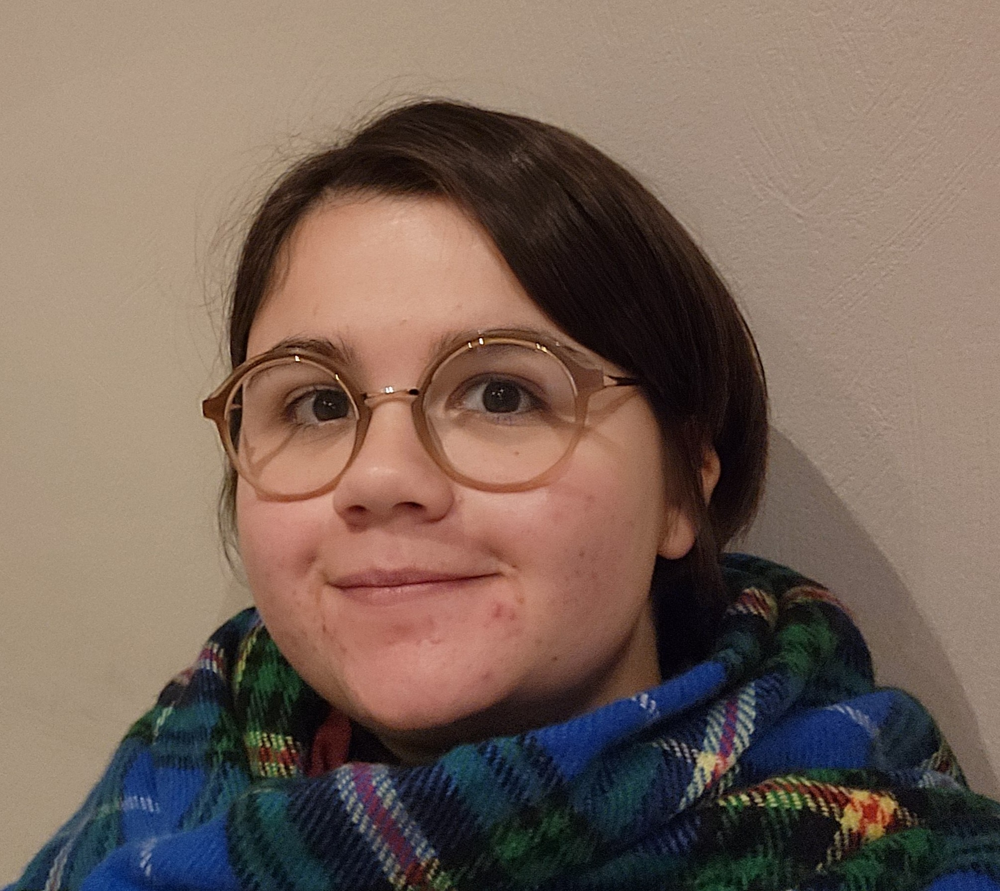

Bienvenue sur ma page web !
Je suis actuellement en 1ère année de thèse à l'Université Grenoble Alpes au sein du laboratoire TIMC sous la direction de Caroline Bazzoli, Sophie Lambert-Lacroix et Renaud Tamisier. Mon travail porte sur l'analyse de trajectoires de santé augmentées par approches multimodales avec une application au syndrome d'apnée obstructive du sommeil.
Vous pourrez trouver sur cette page web des informations sur les cours que je donne, mes projets de recherche, mon parcours académique, et quelques documents et liens utiles.
Contact
garance.malnoe[at]univ-grenoble-alpes.fr · LinkedIn · GitHub